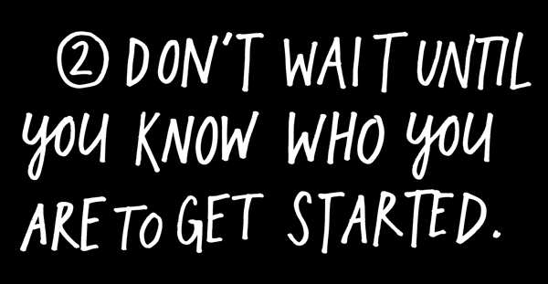
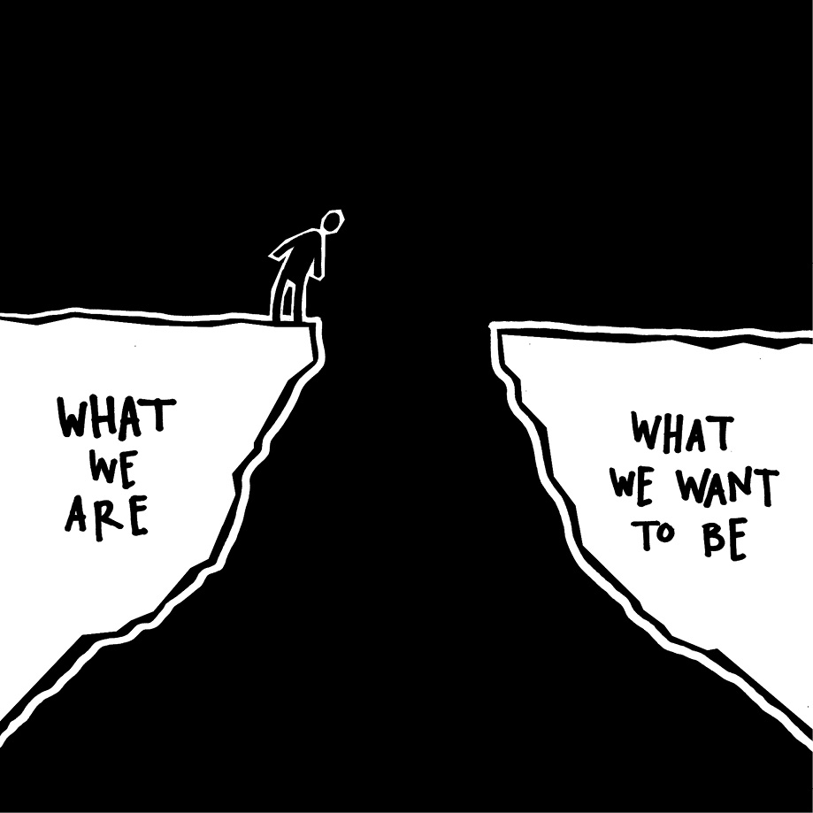
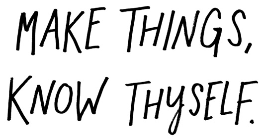
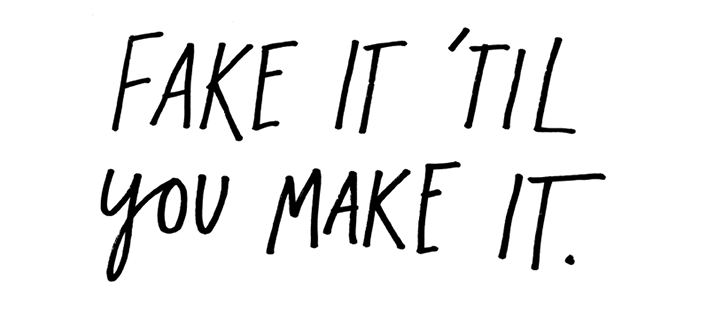
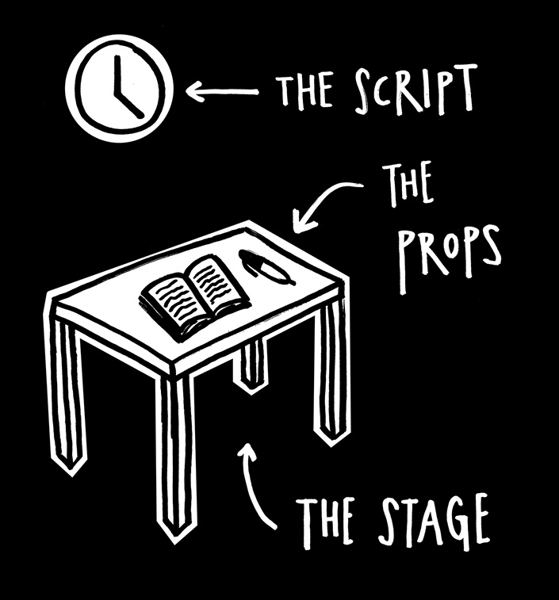
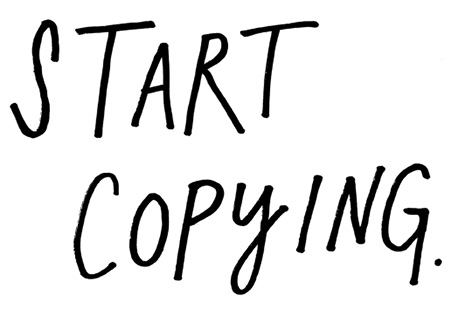
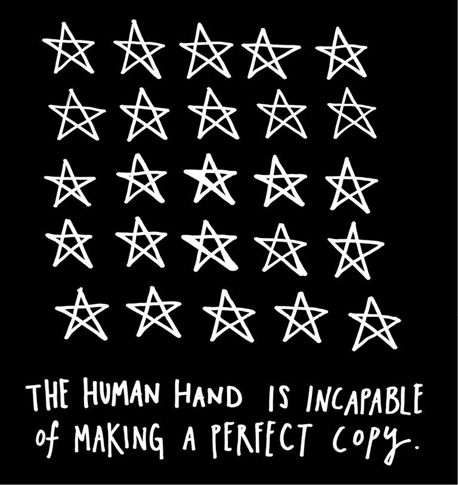
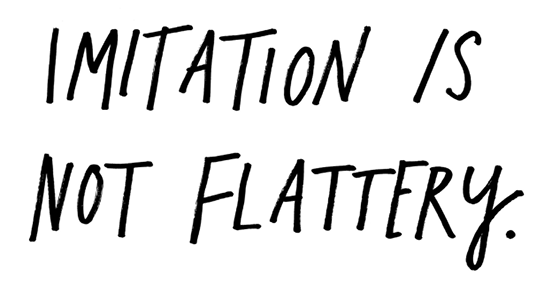
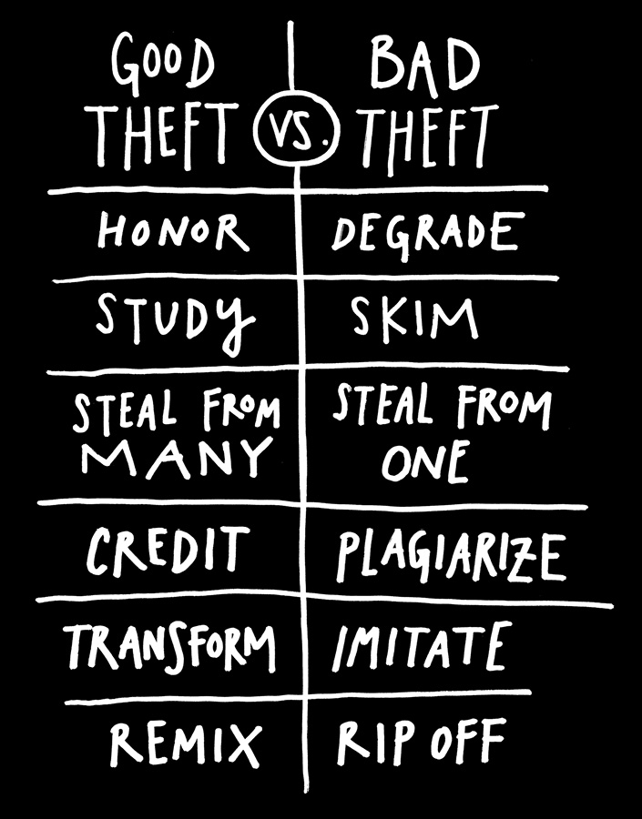

If I’d waited to know who I was or what I was about before I started “being creative,” well, I’d still be sitting around trying to figure myself out instead of making things. In my experience, it’s in the act of making things and doing our work that we figure out who we are.
You’re ready. Start making stuff.
You might be scared to start. That’s natural. There’s this very real thing that runs rampant in educated people. It’s called “impostor syndrome.”
The clinical definition is a “psychological phenomenon in which people are unable to internalize their accomplishments.” It means that you feel like a phony, like you’re just winging it, that you really don’t have any idea what you’re doing.
Guess what: None of us do. Ask anybody doing truly creative work, and they’ll tell you the truth: They don’t know where the good stuff comes from. They just show up to do their thing. Every day.

Have you ever heard of dramaturgy? It’s a fancy term for something William Shakespeare spelled out in his play
As You Like It about 400 years ago:
All the world’s a stage,
And all the men and women merely players:
They have their exits and their entrances;
And one man in his time plays many parts.
Another way to say this? Fake it ’til you make it.
I love this phrase. There are two ways to read it:
1. Pretend to be something you’re not until you are—fake it until you’re successful, until everybody sees you the way you want them to; or
2. Pretend to be making something until you actually make something.
I love both readings—you have to dress for the job you want, not the job you have, and you have to start doing the work you want to be doing.
I also love the book Just Kids by the musician Patti Smith. It’s a story about how two friends who wanted to be artists moved to New York. You know how they learned to be artists?
“You start out as a phony and become real.”
—Glenn O’Brien

They pretended to be artists. In my favorite scene, from which the book gets its title, Patti Smith and her friend, the photographer Robert Mapplethorpe, dress up in all their bohemian gypsy gear and go to Washington Square Park, where everybody’s hanging out. This old touristy couple is gawking at them. The wife says to her husband, “Oh, take their picture. I think they’re artists.” “Oh, go on,” the husband disagrees. “They’re just kids.”
The point is: All the world’s a stage. Creative work is a kind of theater. The stage is your studio, your desk, or your workstation. The costume is your outfit—your painting pants, your business suit, or that funny hat that helps you think. The props are your materials, your tools, and your medium. The script is just plain old time. An hour here, or an hour there—just time measured out for things to happen.
Fake it ’til you make it.

“Start copying what you love. Copy copy copy copy. At the end of the copy you will find your self.”
—Yohji Yamamoto
Nobody is born with a style or a voice. We don’t come out of the womb knowing who we are. In the beginning, we learn by pretending to be our heroes. We learn by copying.
We’re talking about practice here, not plagiarism—plagiarism is trying to pass someone else’s work off as your own. Copying is about reverse-engineering. It’s like a mechanic taking apart a car to see how it works.

We learn to write by copying down the alphabet. Musicians learn to play by practicing scales. Painters learn to paint by reproducing masterpieces.
Remember: Even The Beatles started as a cover band. Paul McCartney has said, “I emulated Buddy Holly, Little Richard, Jerry Lee Lewis, Elvis. We all did.” McCartney and his partner John Lennon became one of the greatest songwriting teams in history, but as McCartney recalls, they only started writing their own songs “as a way to avoid other bands being able to play our set.” As Salvador Dalí said, “Those who do not want to imitate anything, produce nothing.”
First, you have to figure out who to copy. Second, you have to figure out what to copy.
Who to copy is easy. You copy your heroes—the people you love, the people you’re inspired by, the people you want to be. The songwriter Nick Lowe says, “You start out by rewriting your hero’s catalog.” And you don’t just steal from one of your heroes, you steal from all of them. The writer Wilson Mizner said if you copy from one author, it’s plagiarism, but if you copy from many, it’s research. I once heard the cartoonist Gary Panter say, “If you have one person you’re influenced by, everyone will say you’re the next whoever. But if you rip off a hundred people, everyone will say you’re so original!”
What to copy is a little bit trickier. Don’t just steal the style, steal the thinking behind the style. You don’t want to look like your heroes, you want to see like your heroes.
The reason to copy your heroes and their style is so that you might somehow get a glimpse into their minds. That’s what you really want—to internalize their way of looking at the world. If you just mimic the surface of somebody’s work without understanding where they are coming from, your work will never be anything more than a knockoff.

“We want you to take from us. We want you, at first, to steal from us, because you can’t steal. You will take what we give you and you will put it in your own voice and that’s how you will find your voice. And that’s how you begin. And then one day someone will steal from you.”
—Francis Ford Coppola
At some point, you’ll have to move from imitating your heroes to emulating them. Imitation is about copying. Emulation is when imitation goes one step further, breaking through into your own thing.
“There isn’t a move that’s a new move.” The basketball star Kobe Bryant has admitted that all of his moves on the court were stolen from watching tapes of his heroes. But initially, when Bryant stole a lot of those moves, he realized he couldn’t completely pull them off because he didn’t have the same body type as the guys he was thieving from. He had to adapt the moves to make them his own.
Conan O’Brien has talked about how comedians try to emulate their heroes, fall short, and end up doing their own thing. Johnny Carson tried to be Jack Benny but ended up Johnny Carson. David Letterman tried to copy Johnny Carson but ended up David Letterman. And Conan O’Brien tried to be David Letterman but ended up Conan O’Brien. In O’Brien’s words, “It is our failure to become our perceived ideal that ultimately defines us and makes us unique.” Thank goodness.

A wonderful flaw about human beings is that we’re incapable of making perfect copies. Our failure to copy our heroes is where we discover where our own thing lives. That is how we evolve.
So: Copy your heroes. Examine where you fall short. What’s in there that makes you different? That’s what you should amplify and transform into your own work.
In the end, merely imitating your heroes is not flattering them. Transforming their work into something of your own is how you flatter them. Adding something to the world that only you can add.
“I have stolen all of these moves from all these great players. I just try to do them proud, the guys who came before, because I learned so much from them. It’s all in the name of the game. It’s a lot bigger than me.”
—Kobe Bryant